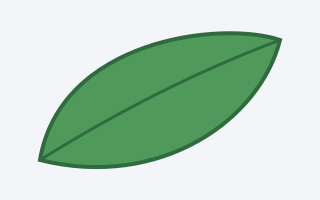
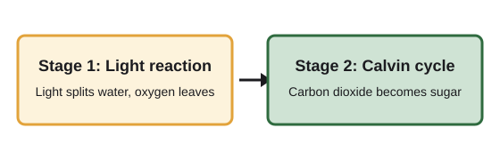

Lesson 3: Photosynthesis in pictures and video
Plants make their own food from light. This page collects the pictures, videos and data for lesson 3.
Fotosintesis adalah proses tumbuhan membuat makanan dari cahaya.
In the Indonesian edition this lesson is called Fotosintesis pada tumbuhan.
Watch
Look


Key point: chlorophyll absorbs red and blue light and reflects green light, which is why most leaves look green to us.
Did you know?
Data
| Plant | Hours of light | Growth in cm |
| Bean | 4 | 2.1 |
| Bean | 8 | 4.6 |
| Bean | 12 | 6.3 |
| Light distance | Bubbles per minute |
|---|---|
| 10 cm | 32 |
| 20 cm | 18 |
| 40 cm | 7 |
Glossary
Chlorophyll: the green pigment that absorbs light.
Stomata: tiny pores that let gases in and out.
Show the full equation
Carbon dioxide plus water, with light, gives glucose plus oxygen.